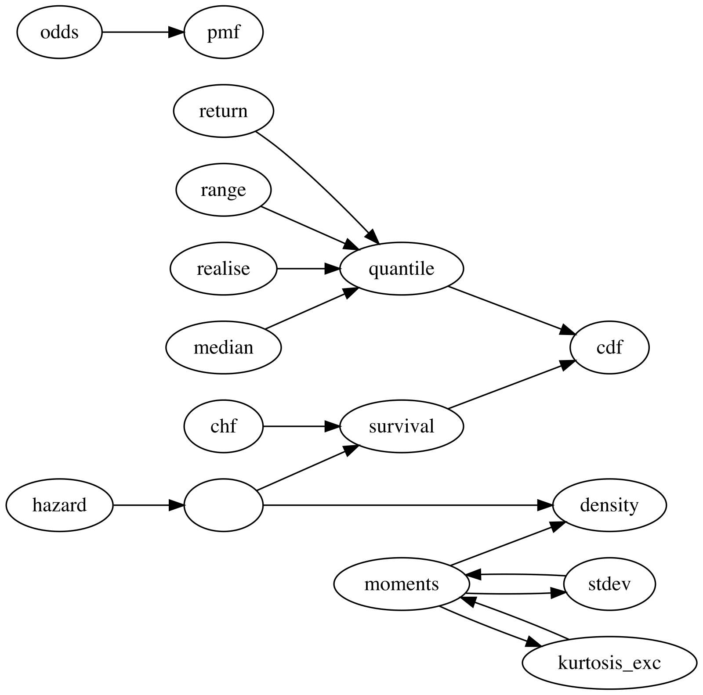

This vignette covers the first goal of distionary: to
provide a framework for creating a distribution, either one of
the built-in distributions, or your own.
Built-In Distribution Families
All distribution families found in the stats package are
made available with distionary, along with a few others.
All families are shown in the following table.
| Distribution |
distionary Function |
Has counterpart in stats
|
|---|---|---|
| Bernoulli | dst_bern() |
Yes |
| Beta | dst_beta() |
Yes |
| Binomial | dst_binom() |
Yes |
| Cauchy | dst_cauchy() |
Yes |
| Chi Squared | dst_chisq() |
Yes |
| Degenerate | dst_degenerate() |
No |
| Exponential | dst_exp() |
Yes |
| F | dst_f() |
Yes |
| Gamma | dst_gamma() |
Yes |
| Geometric | dst_geom() |
Yes |
| Generalised Extreme Value (GEV) | dst_gev() |
No |
| Generalised Pareto (GPD) | dst_gpd() |
No |
| Hypergeometric | dst_hyper() |
Yes |
| Log Normal | dst_lnorm() |
Yes |
| Log Pearson Type III | dst_lp3() |
No |
| Negative Binomial | dst_nbinom() |
Yes |
| Normal | dst_norm() |
Yes |
| Pearson Type III | dst_pearson3() |
No |
| Poisson | dst_pois() |
Yes |
| Student t | dst_t() |
Yes |
| Uniform | dst_unif() |
Yes |
| Weibull | dst_weibull() |
Yes |
In addition, there is a special “Null” distribution object akin to a missing or unknown distribution. This is useful, for example, if an algorithm fails to return a distribution: instead of throwing an error, a Null distribution can be returned.
# Make a Null distribution.
null <- dst_null()
# Inspect
null
#> Null distribution (NA)A Null distribution always evaluates to NA:
Distributions with a counterpart in the stats package
use the same functions from the package and the same parameter names.
For instance, take a look at the source code defining the Normal
distribution to see that the representations wrap the
stats::*norm() family of functions.
dst_norm
#> function (mean, sd)
#> {
#> checkmate::assert_numeric(mean, len = 1)
#> checkmate::assert_numeric(sd, 0, len = 1)
#> if (is.na(mean) || is.na(sd)) {
#> return(dst_null())
#> }
#> distribution(.parameters = list(mean = mean, sd = sd), density = function(x) stats::dnorm(x,
#> mean = mean, sd = sd), cdf = function(x) stats::pnorm(x,
#> mean = mean, sd = sd), quantile = function(p) stats::qnorm(p,
#> mean = mean, sd = sd), realise = function(n) stats::rnorm(n,
#> mean = mean, sd = sd), survival = function(x) stats::pnorm(x,
#> mean = mean, sd = sd, lower.tail = FALSE), mean = mean,
#> median = mean, variance = sd^2, stdev = sd, skewness = 0,
#> kurtosis_exc = 0, range = c(-Inf, Inf), .name = "Normal",
#> .vtype = "continuous")
#> }
#> <bytecode: 0x56040373efb0>
#> <environment: namespace:distionary>User-Defined Distributions
You can make your own distribution using the
distribution() function. Provide it with name-value pairs
that will be stored with the object in a list. Some names have a special
interpretation in distionary in that they may be leveraged
to compute other properties that aren’t specified in
distribution(). These special names are:
- Any distributional representation
*invoked byeval_*()(e.g.,quantileforeval_quantile()). - Any property (e.g.,
meanformean())
See the Evaluate a Distribution vignette for more details on these evaluation functions.
For this version of distionary, it is mandatory to
specify at least cdf in order for non-specified properties
to be evaluated. For continuous or discrete distributions,
density or pmf may also be needed.
Optionally, you can also specify an entry for
.parameters, which should be a named list of parameters
that define the distribution. These parameters are never used for
distribution calculations, but are sometimes useful to keep track of for
analysis. It is intended that a future version of
distionary will refer to these parameters for its
calculations, but will not break existing code.
Here is an example distribution.
# Make a continuous distribution
linear <- distribution(
density = function(x) {
d <- 2 * (1 - x)
d[x < 0 | x > 1] <- 0
d
},
cdf = function(x) {
p <- 2 * x * (1 - x / 2)
p[x < 0] <- 0
p[x > 1] <- 1
p
},
g = 9.81,
another_representation = function(x) x^2,
.vtype = "continuous",
.name = "My Linear",
.parameters = list(a = 1)
)
# Inspect
linear
#> My Linear distribution (continuous)
#> --Parameters--
#> a
#> 1The usual evaluation framework can now be accessed. For example, the CDF and mean can be evaluated, even though the mean has not been specified.
These quantities can be invoked by the more general function
eval_property().
eval_property(linear, "cdf", c(0.2, 0.5, 0.7))
#> [1] 0.36 0.75 0.91
eval_property(linear, "mean")
#> [1] 0.3333333eval_property() is a useful function for accessing
quantities that are not built-in to distionary, like
g and another_representation in this
example.
eval_property(linear, "another_representation", 1:4)
#> [1] 1 4 9 16
eval_property(linear, "g")
#> [1] 9.81Network of Properties
The current version of distionary derives distribution
properties from other properties according to the following network. An
arrow from one property to another indicates that the first property can
be calculated from the second. For example, quantile can be
calculated from cdf, and mean can be
calculated from density.
